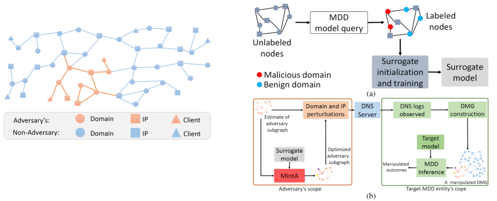

PromSec: Prompt Optimization for Secure Generation of Functional Source Code with Large Language Models (LLMs)
Problem: LLMs tend to generate functional but insecure code.
Objective: Optimize prompts to generate secure functional code with LLMs.
Key Contributions:
- gGAN + LLM loop to reduce vulnerabilities and maintain functionality.
- Contrastive learning for dual-objective optimization.
- Transferable prompts across LLMs and vulnerabilities.
Methodology: gGAN fixes code vulnerabilities, LLM improves prompts, iterative loop for optimizing code security.
Results: Enhances security while maintaining functionality, reduces operational time and costs significantly, prompts work across languages and LLMs, reduces vulnerabilities in generated code.

[1] M. Nazzal, I. Khalil, A. Khreishah, and N.H. Phan, “PromSec: Prompt Optimization for Secure Generation of Functional Source Code with Large Language Models (LLMs),” in 31st ACM Conference on Computer and Communications Security (CCS 2024), Salt Lake City, UT, USA, Oct. 2024.
Multi-Instance Adversarial Attack on GNN-Based Malicious Domain Detection
Problem: Need for a new adversarial attack on multiple instances to evade malicious domain detection.
Objective: Develop MintA, an attack that evades GNN-based malicious domain detection by optimizing multiple domain manipulations.
Key Contributions:
- MintA: A multi-instance evasion attack optimizing node perturbations for evasiveness.
- Black-box attack requiring no knowledge of model parameters.
Methodology: Construct a surrogate model using black-box access, optimize node and edge perturbations to maximize evasiveness, implement perturbations through domain and IP modifications.
Results: Achieves over 80% success rate in evading detection, bypasses outlier detection and graph purification defenses.
[2] M. Nazzal, I. Khalil, A. Khreishah, N. Phan, & Y. Ma, “Multi-Instance Adversarial Attack on GNN-Based Malicious Domain Detection,” in 2024 IEEE Symposium on Security and Privacy (SP), May 2024.
SA-DS: A Dataset for Large Language Model-Driven AI Accelerator Design Generation
Problem: Lack of specialized datasets for AI-driven accelerator design.
Objective: Introduce SA-DS for LLM-based DNN hardware design.
Key Contributions:
- SA-DS: Diverse array designs using Gemmini.
- An envisioned framework for optimizing hardware design generation.
Methodology: Data from Gemmini in Chisel, supports LLM fine-tuning and multi-shot learning, quality check using Verilator.
Results: 100% pass rate with multi-shot learning, fewer revisions, better workflow.

[3] D. Vungarala*, M. Nazzal*, M. Morsali, C. Zhang, A. Ghosh, A. Khreishah, and S. Angizi, “SA-DS: A Dataset for Large Language Model-Driven AI Accelerator Design Generation,” IEEE International Symposium on Circuits and Systems (ISCAS) 2025. [Accepted].
[4] arXiv preprint: arXiv:2404.10875. https://doi.org/10.48550/arXiv.2404.10875